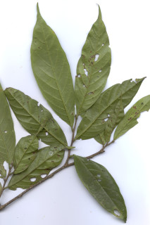
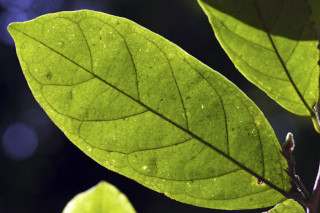
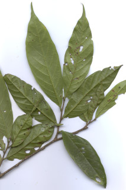
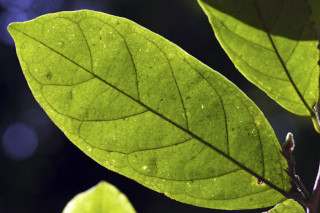
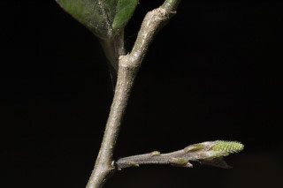
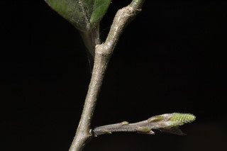
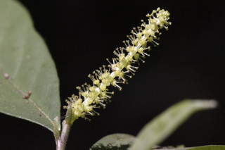
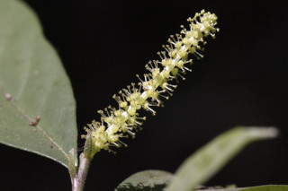

| Leaves : | Leaves simple , alternate , distichous ; stipules in pairs, linear-lanceolate , acute , 1.2 cm long, pubescent , subpersistent ; petiole 0.25-0.7 (-1.2) cm long, terete sometimes subcanaliculate , pubescent ; lamina 8-22 x 2.5-7.7 cm, usually oblong to elliptic or oblanceolate , apex gradually acuminate with mucronate tip, base acute to rounded or cuneate , margin entire , chartaceous , glabrous except on midrib ; secondary_nerves prominent beneath, 5-9 pairs, ascending; tertiary_nerves broadly reticulate . |

 





 


 
